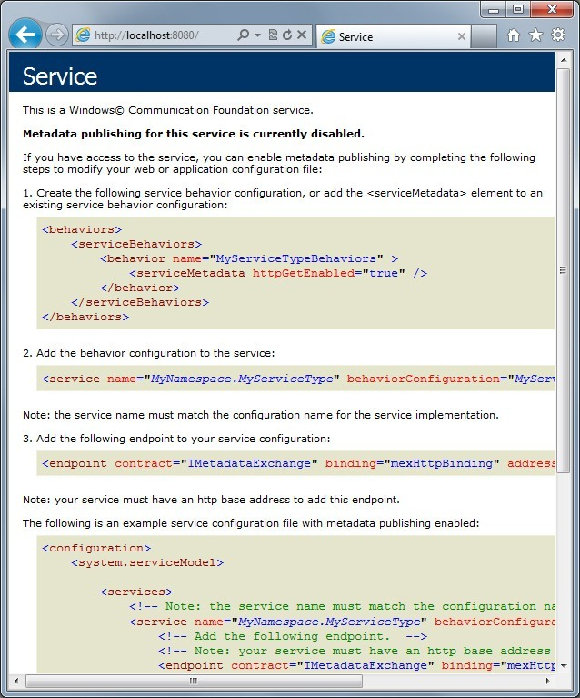
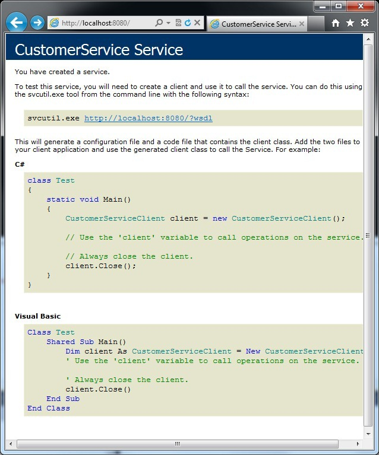

In this post we'll be looking at build a simple WCF client and WCF service application. You'll be up and running in no time guaranteed.
In WCF 4.0 (in contrast to earlier versions), things have gotten a lot easier in as far a configuration is concerned. WCF 4.0 stresses convention over configuration. So we'll first get our client and service up and running using conventions (no configuration at all) and then we'll take a look at how we would configure things if we need to. But rather than using the config file we'll programmatically configure things.
WCF Service Application
We'll start with the WCF service application first. So create a new console application and follow along. We'll need reference 2 assemblies in this project so lets go ahead and do that as well. The 2 assemblies are:
- System.ServiceModel
- System.Runtime.Serialization
In order to define what methods and properties our service has we define an interface that will represent our service contract. This is a regular interface that has the properties and methods we want to include in our service contract. The only additional thing to do here is to decorate the interface with the ServiceContract attribute. So go ahead and create a new class file define the service contract as shown below:
ICustomerService Interface - The Service Contract
using System; using System.Collections.Generic; using System.Linq; using System.Text; using WCFTcpServer; using System.ServiceModel; namespace WcfServer { [ServiceContract] interface ICustomerService { [OperationContract] IEnumerable<Customer> GetCustomers(); [OperationContract] Customer GetCustomer(int id); [OperationContract] int InsertCustomer(Customer customer); [OperationContract] void UpdateCustomer(Customer customer); [OperationContract] void DeleteCustomer(int customerId); } }
Showing the ICustomerService.cs file
Notice that the interface is decorated with the ServiceContract attribute and each of the methods we want to expose is decorated with the OperationContract attribute. That takes care of our service contract.
The next thing we need to do is define the Customer class that this service contract is operating on. So lets create a new class file and define our Customer class as shown below:
Customer Class
using System; using System.Collections.Generic; using System.Linq; using System.Text; using System.Runtime.Serialization; namespace WcfServer { [DataContract] public class Customer { [DataMember] public int Id { get; set; } [DataMember] public string FirstName { get; set; } [DataMember] public string LastName { get; set; } public override string ToString() { return String.Concat( "Id: " + Id.ToString(), " Name: " + FirstName, " " + LastName); } } }
Showing the Customer.cs file
Notice that the Customer class has been decorated with the DataContract attribute and each of the public properties we wish to expose as part of our service contract is decorated with the DataMember attribute. We've also overridden the ToString()method here just as a convenience (displaying in the console window).
Next, well need to implement our service contract. That is we'll need to define a class that implements our ICustomerService interface. The implementation is not important for this discussion as it is a regular class and indeed, the implementation is not specific to WCF.
The CustomerService class that implements the ICustomerService interface
using System; using System.Collections.Generic; using System.Linq; using System.Text; using System.ServiceModel; namespace WcfServer { [ServiceBehavior(ConcurrencyMode = ConcurrencyMode.Multiple, InstanceContextMode = InstanceContextMode.Single)] public class CustomerService : ICustomerService { private List<Customer> customers; public CustomerService() { customers = new List<Customer> { new Customer { Id=1, FirstName="George", LastName="Washington"}, new Customer { Id=2, FirstName="John", LastName="Adams"}, new Customer { Id=3, FirstName="Thomas", LastName="Jefferson"}, new Customer { Id=4, FirstName="James", LastName="Madison"} }; } public IEnumerable<Customer> GetCustomers() { Console.WriteLine("GetCustomers()"); return customers; } public Customer GetCustomer(int id) { Console.WriteLine("GetCustomer(" + id.ToString() + ")"); return customers.Where(c => c.Id == id).First(); } public int InsertCustomer(Customer customer) { Console.WriteLine("InsertCustomer()"); var newId = customers.Max(c => c.Id) + 1; customer.Id = newId; customers.Add(customer); return newId; } public void UpdateCustomer(Customer customer) { Console.WriteLine("UpdateCustomer()"); Console.WriteLine(customer); } public void DeleteCustomer(int customerId) { Console.WriteLine("DeleteCustomer(" + customerId.ToString() + ")"); var customerToDelete = customers.Where(c => c.Id == customerId).Select(c => c).First(); if (customerToDelete != null) customers.Remove(customerToDelete); } } }
Showing CustomerService.cs
Notice that the CustomerService class has been decorated with the ServiceBehavior. You don't need to specify any of the named parameters you see there.
We're now at the final part of our WCF Service application. WCF services can support multiple transport protocols (in the same service application without any code changes in our service), such as HTTP, HTTPS, TCP, P2P (Peer to Peer), IPC (Named Pipes), MSMQ (Message Queue). We can even choose to host our service in IIS or choose to host it in our own application (as we are doing here). In the service we're building we'll support 3 of these transport protocols (just for kicks).
The WCF Service Host with endpoint configuration
using System; using System.Collections.Generic; using System.Linq; using System.Text; using System.ServiceModel; using System.ServiceModel.Description; using System.ServiceModel.Channels; namespace WcfServer { class WcfServiceHost { static void Main(string[] args) { using (ServiceHost host = new ServiceHost(typeof(CustomerService), new Uri("http://localhost:8080"), new Uri("net.pipe://localhost"), new Uri("net.tcp://localhost:8081"))) { host.AddServiceEndpoint(typeof(ICustomerService), new BasicHttpBinding(), "CustomerService"); host.AddServiceEndpoint(typeof(ICustomerService), new NetNamedPipeBinding(), "CustomerService"); host.AddServiceEndpoint(typeof(ICustomerService), new NetTcpBinding(), "CustomerService"); host.Open(); Console.WriteLine("Service is ready and waiting.\r\nPress <ENTER> to exit."); Console.ReadLine(); host.Close(); } } } }
Showing the WcfServiceHost.cs file
When we construct our ServiceHost instance (the host variable in the code above) we specify two parameters:
- The Type of our service (that is the Type of the class that implements our service contract)
- A
paramsarrayUrithat is the array ofBaseAddressesour service will support.
A BaseAddress is essentially the initial part of the Uri for the hosted service. It includes the transport protocol as well as a port number (if required by the transport protocol). So you can see above that we've provided 3 bases addresses, one for each of the transport protocols we'd like our service to support.
Once we have our ServiceHost instance, we add the endpoints for each of the transport protocols we've added (those BaseAddresses in the constructor).
Endpoint
An endpoint is the name for an entity on one end of a transport layer and it comprises of the these 3 things:
- Address
- Binding
- Contract
The Address is comprised on the base address plus the "tail" of the Uri. In our case the "tail" is "CustomerService" string parameter you see in the code above. So the "address" for the basic http binding is http://localhost:8080/CustomerService
The Binding is essentially the transport protocol. However, each transport protocol essentially implies certain things for instance, HTTP implies a disconnected, stateless Request-Response protocol. So a binding implicitly implies the capabilities and modes of the transport protocol as well.
A Contract is a platform neutral way of describing what the service does (or is capable of) and in WCF there are 4 types of contracts (we've already meet 2 of them)
- Service Contracts
- Data Contract
- Fault Contracts
- Message Contracts
Message contracts are rarely used. They're typically used due to interoperability needs with legacy services.
The AdServiceEnpoint() method has 9 overloads, bur essentially we need to either provide and endpoint instance or provide the information that makes up an endpoint (see note above). In the overload we're using we provide the Contract (ICustomerService), the Binding (for example BasicHttpBinding) and the Address (the string "CustomerService"). The address can be an absolute url or a relative url. We're using a relative url since we've provided the BaseAddress for each of the transport protocols earlier. Effectively, the address for each of the endpoints is the concatenation of the BaseAddress and the relative url. For for the Http endpoint our url is http://localhost:8080/CustomerService.
Once we've configured our host we can call the Open() method on it and that starts the host listening for requests from clients. Our WCF service application is now complete.
WCF Client Application
The typical way to start with building a client for a service is to get the IDE to generate a proxy (just like with a SOAP service). With WCF you can do that, however, at the moment, our service does not support metadata discovery. With WCF there is a simpler way to create a proxy and that is to use the ChannelFactory<T> class. For the client we add a new console application project our solution. The code listing below shows the code for the WCF client.
The Main method of the client application.
using System; using System.Linq; using System.ServiceModel; using WcfServer; namespace WCFClient { class WcfCustomerServiceClient { static void Main(string[] args) { var channelFactory = new ChannelFactory<ICustomerService>(new BasicHttpBinding(),
"http://localhost:8080/CustomerService"); var customerService = channelFactory.CreateChannel(); try { Console.WriteLine("GetCustomers()"); var customers = customerService.GetCustomers(); foreach (var customer in customers) Console.WriteLine(customer); } finally { if (customerService != null) (customerService as IDisposable).Dispose(); if (channelFactory != null) channelFactory.Close(); } Console.ReadLine(); } } }
Showing the WcfCustomerServiceClient.cs file
Before this code will compile, we need to have a definition for Customer and ICustomerService. There are a few ways to do this:
- Ideally we would have a library project in our solution and these two classes/interfaces would be in this library project and both the server and client projects would reference this library project.
- We could simply link to these classes/interface in our client project. That way if/when we make any changes to them, those changes are automatically visible in our client project as well.
- We could simply redefine these classes/interfaces in our client project. That will work, but it's really bad idea.
In this project I've opted for option #2 above.
The ChannelFactory and the channel/proxy (the customerService variable) both need to be Disposed or Closed which is why we're using the try-finally here.
Our client only uses the BasicHttpBinding (as you can see above). Typically a client only every uses a single binding while servers may implement/support multiple bindings and since our server does support multiple binding, let's see how we'd use those from our client. It's simple really. You can see the two other variations below.
Creating a ChannelFactory instance that uses the NetTcpBinding
var channelFactory = new ChannelFactory<ICustomerService>(new NetTcpBinding(), "net.tcp://localhost:8081/CustomerService");
Creating an instane of a ChannelFactory that uses the NetNamedPipes Binding
var channelFactory = new ChannelFactory<ICustomerService>(new NetNamedPipeBinding(), "net.pipe://localhost/CustomerService");
At this point we're really done. We could run our service and then run our client and we should see a list of customers output to the console window. In the rest of this post, we'll look at:
- Building a WCF client proxy by hand
- Getting our service to support metadata publishing so we can use the VS.NET IDE or svcutil.exe to have our proxy class generated for us.
WCF Proxy by hand
We could if we wanted to, create a proxy for our ICustomerService contract by hand. Essentially, we'll be doing what the ChannelFactory<T> is doing behind the scenes.
Every proxy descends from ClientBase<T>. Because ClientBase<T> has a number of constructor overloads, we'll need to (or should) implement all of the constructor overloads and simply forward to calls on to base().
In addition to the constructor overloads, we need to implement the methods our ICustomerService has. As you can see, from the code listing below, it's really not had and at all. It should be noted that the ChannelFactory does not support asynchronous calls. So if we need to make asynchronous calls we could either get the IDE to generate a proxy for us, provided our service supports generating metadata. Or we'll need to implement the proxy ourselves and also implement the asynchronous versions of the methods as well. See this earlier post on how to make existing synchronous calls asynchronous.
IAsyncResult–Making Existing methods Asnchronous
Generating a proxy by hand by descending from ClientBase
using System.Collections.Generic; using System.ServiceModel; using WcfServer; namespace WCFTcpClient { class CustomerClient : ClientBase<ICustomerService> { public CustomerClient() { } public CustomerClient(string endpointConfigurationName) : base(endpointConfigurationName) { } public CustomerClient(string endpointConfigurationName, string remoteAddress) : base(endpointConfigurationName, remoteAddress) { } public CustomerClient(string endpointConfigurationName, System.ServiceModel.EndpointAddress remoteAddress) : base(endpointConfigurationName, remoteAddress) { } public CustomerClient(System.ServiceModel.Channels.Binding binding, System.ServiceModel.EndpointAddress remoteAddress) : base(binding, remoteAddress) { } public IEnumerable<Customer> GetCustomers() { return base.Channel.GetCustomers(); } public Customer GetCustomer(int id) { return base.Channel.GetCustomer(id); } public int InsertCustomer(Customer customer) { return base.Channel.InsertCustomer(customer); } public void UpdateCustomer(Customer customer) { base.Channel.UpdateCustomer(customer); } public void DeleteCustomer(int customerId) { base.Channel.DeleteCustomer(customerId); } } }
Showing the CustomerServiceClientProxy.cs file
Once we have this class in place, the way we'd create an instance of the proxy and use it is shown in the code listing below.
Creating an instance of our hand-crafted WCF client proxy and using it
var customerService = new CustomerClient(new NetTcpBinding(), new EndpointAddress("net.tcp://localhost:8081/CustomerService")); try { foreach (var customer in customerService.GetCustomers()) Console.WriteLine(customer); } finally { customerService.Close(); }
Showing how we've use our hand crafted WCF client proxy.
In the code above, the proxy is using the NetTcpBinding. You can make the required changes as shown earlier if you wanted to use the BaseHttpBinding or the NetNamedPipesBinding.
WCF Service supporting metadata publishing
Next, well look at programmatically configuring our WCF service to support metadata publishing. There two ways for a service in WCF to support metadata publishing.
Before we start adding this capability to our service, let's confirm that our service does not support this capability yet. So start up the service application and then using a browser browser to the base address of the http binding, which is http://localhost:8080 . What you should see is a page that looks like this:

As you can see in the image above, metadata publishing is not currently enabled. There are two styles in which a WCF service may published metadata. Both are industry standards. One is by way of a WSDL document and it always works over HTTP-GET. Let's look at enabling this first. The code below shows that we've added a behavior to our service description in order to enabled metadata publishing as WSDL document. This code MUST appear before you Open the host.
Enabling Metadata Publishing as a WSDL document
var serviceMetadataBehavior = new ServiceMetadataBehavior(); serviceMetadataBehavior.HttpGetEnabled = true; host.Description.Behaviors.Add(serviceMetadataBehavior);
Adding the ServiceMetadataBehavior to the service Description
Now, run the service and browse to the same url again. What you should see is something similar to what is shown in the image blow.

Navigating to the first link we see will bring up the WSDL document that clients can use to build a proxy for our service. The other way to publish metadata is to use the Metadata Exchange protocol. This protocol works via endpoints (and not behaviors). And since they are endpoints they also include (or indicate) the transport protocol (the binding). In other words, if your service only supports the NetTcpBinding, then you can publish the metadata using another NetTcpbinding endpoint (rather than only HTTP-GET) or you may decide to publish the metadata over HTTP. It's up to you.
Adding the MetadataExchangeBinding for the IMetaDataExchange contract
Binding mexBinding = MetadataExchangeBindings.CreateMexHttpBinding(); host.AddServiceEndpoint(typeof(IMetadataExchange), mexBinding, "mex");
Adding a Metadata echange endpoint
Notice in the code above that we're using the MexHttpBinding (CreateMexHttpBinding()). The other methods available are:
- CreateMexHttpsBinding
- CreateMexTcpBinding
- CreateMexNamedPipeBinding
At the time of adding the endpoint to our service host, we've included a relative Url ("mex"). So once again, the complete Url will be the BaseAddress (of that Binding http://localhost:8080) plus the relative Url. So the complete Url for our MEX metadata endpoint is http://localhost:8008/mex.
It should be noted that even if we wanted to only publish our MEX endpoint, we'd still need to add the ServiceMetadataBehavior like we did to enabled WSDL publishing. We won't have to set the HttpGetEnabled property to true (we could if we wanted to) however.